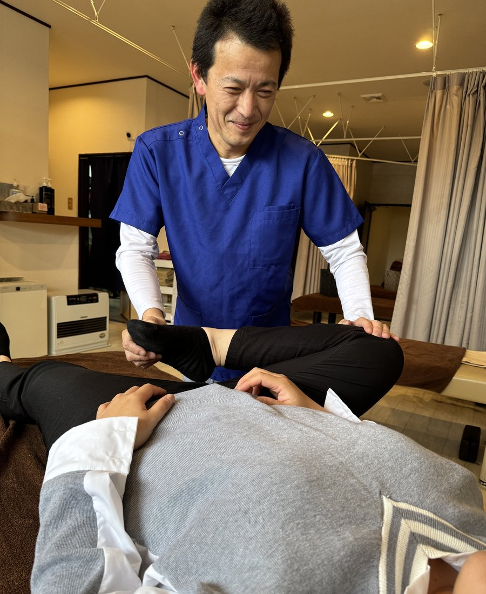

国家資格保有の施術者が、訪問マッサージ・訪問鍼灸を行います。
通院が困難な方のお身体の状態に合わせて、一人ひとり丁寧に施術いたします。

皮膚に直接刺激を与えることで、皮膚末端から心臓にかけての血液循環やリンパ循環の改善を目指す手技療法です。
関節の可動域の運動も取り入れることにより、運動機能の向上をはかり、生活の質も向上します。
ご自宅という慣れた環境で、ご本人さまのペースに合わせてゆっくりと施術を受けていただけるのが、訪問マッサージの大きな特長です。
皮膚末端から心臓にかけての血液循環やリンパの流れを促進し、むくみや冷え、だるさなどの改善が期待できます。
関節の可動域運動を取り入れることで、拘縮の予防・改善を目指します。日常生活の動作がしやすくなります。
筋力の低下や麻痺がある方も、施術を継続することで運動機能の維持・向上をはかり、生活の質の向上を目指します。
1回あたりの施術時間は約20分。症状によって頻度も変わってまいります。
その日の体調・痛みの場所をお伺いします。
症状に合わせて手技で丁寧に施術します。
関節可動域の運動で機能改善を促します。
施術後の状態を確認し、次回の予定を調整。
主に神経痛、リウマチ、腰痛症、五十肩、頚腕症候群、頚椎捻挫後遺症などの慢性的な痛みに関する症状に適応しますが、鍼灸はそのほかの多くの辛い症状や病気にも効果が期待できます。
一般にはあまり知られていませんが、鍼灸には血液循環を良くしたり、免疫細胞の増加・活性化に作用があります。また、内臓の働きを調節する自律神経を整え、身体の持つ恒常性維持機能を高める働きもあります。
神経痛、リウマチ、腰痛、五十肩、頚腕症候群など、慢性的な痛みに対して効果が期待できます。
鍼灸刺激により、免疫細胞の増加・活性化に作用。身体の持つ自然治癒力を高めることが期待できます。
内臓の働きを調節する自律神経を整え、恒常性維持機能を高めます。不眠や食欲不振などの不調にも。
下記の症状で医療上治療が必要で、通院が困難な方が対象となります。
はり師・きゅう師の国家資格を保有した施術者のみが訪問・施術いたします。
衛生管理を徹底し、使い捨ての鍼を使用しています。安心して施術を受けていただけます。
使用する鍼は髪の毛ほどの細さで、痛みはほとんど感じません。
訪問マッサージとの併用施術も可能です。お身体の状態に合わせてご提案いたします。
ご本人さま・ご家族さま・ケアマネジャーさまからのご相談を承っております。
通院がご不安な方も、まずはお電話でお気軽にお問い合わせください。